Escuela Técnica Superior de Ingeniería Informática
Máster en Ingeniería Informática
Máster en Ingeniería Informática
Análisis y explotación de datos abiertos municipales de transporte con tecnologías Big Data
Carlos Jesús Peláez Rivas
|
Tutorizado por: Antonio Jesús Nebro Urbaneja José Manuel García Nieto Departamento: Lenguajes y Ciencias de la Computación |
Universidad de Málaga Octubre de 2018 |
¿Qué son los datos abiertos?
Datos cuyas principales características son:
Incluyen información de tipo muy variado, como:
- Libre disposición
- Libre uso
- Gratuitos
- Sin derechos de autor
Incluyen información de tipo muy variado, como:
- Salud
- Deporte
- Turismo
- Transporte
Ámbito municipal
Entre los que se incluyen:
-
Datos estáticos
- Ubicaciones de aparcamientos, semáforos, paradas
- Horarios
-
Datos en tiempo real (pseudo-real)
- Niveles de ocupación
- Localización de vehículos
- Cantidad de tráfico en tramos o calles
Generación de los datos abiertos
Ingente cantidad de datos almacenados
Diversos tipos de formatos y estructuras.
Big Data
Permite la creación de aplicaciones para facilitar e intentar mejorar la vida en las ciudades.
Smart mobility
Es mucho más que transporte. Afecta al comportamiento de los ciudadanos.
Smart city
- Smart economy
- Smart enviroment
- Smart governance
- Smart living
- Smart mobility
- Smart people
Estos términos son los que forman la definición actual de ciudad inteligente ofrecida por la Unión Europea.
Contenido de esta presentación
- Introducción
- Tecnologías empleadas
- Objetivos
- Fases del trabajo realizado
- Instalación y configuración
- Búsqueda, descarga y tratamiento
- Análisis y visualización
- Conclusiones generales
Tecnologías empleadas
- Java
- Scala
- Python
- Apache Spark
- MongoDB
- Jupyter
- Folium
- Git
- Raspberry PI
Objetivos
- Búsqueda de los conjuntos de datos
- Aplicaciones para la descarga desde las fuentes de datos usando Python
- Tratamiento de datos en streaming usando Apache Spark
- Comparación de la misma aplicación en Java y Scala
- Procesamiento de histórico de datos usando Python
- Almacenamiento de datos usando MongoDB
- Notebook en Jupyter para realizar estimaciones en los retrasos de la EMT
- Notebook en Jupyter para visualizar y analizar históricos de datos de Málaga y Madrid
- Realizar correcciones sobre los datos
- Realizar estimaciones y regresiones sobre los datos
Fases del trabajo realizado
Instalación y configuración
Máquinas utilizadas
- Ordenador portátil con 4 hilos de ejecución
- Raspberry Pi 3 modelo B
Descarga, instalación y configuración de todas las herramientas a utilizar
Estructura de relación de las aplicaciones
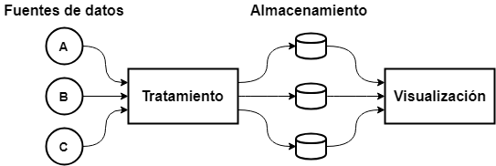
Búsqueda de datos abiertos
Málaga
- Ubicaciones de autobuses de la EMT en tiempo real
- Líneas y paradas de autobuses de la EMT
- Horarios de autobuses de la EMT
- Localización de los semáforos en Málaga
- Localización de los cortes de tráfico en Málaga
- Ocupación de aparcamientos públicos municipales en tiempo real
Madrid
- Histórico de tráfico desde 2013 hasta agosto de 2018
Descarga de datos
Málaga
Uso de una Raspberry Pi para descargar durante 10 días los datos ofrecidos por las diversas fuentes encontradas.
Madrid
Descarga manual de los datos.
Tratamiento y limpieza de datos
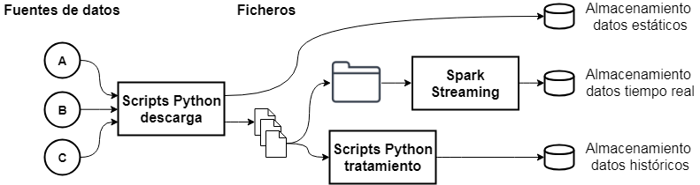
Análisis y visualización
Desarrollo de 6 notebooks en Jupyter usando los datos obtenidos en los pasos anteriores.
- Notebook 1. Visualización usando Folium
- Notebook 2. Segmentación de datos
- Notebook 3. Estimación de retrasos
- Notebook 4. Visualización y predicción – EMT Málaga
- Notebook 5. Visualización y predicción – M30 Madrid
- Notebook 6. Visualización y corrección – Parkings Málaga
Notebook 1. Visualización usando Folium
Primeras pruebas para ver el funcionamiento y la potencia de Jupyter y Folium.
Este notebook incluye una serie de mapas para visualizar los datos descargados de Málaga, entre los que se incluye:
- Paradas de autobús
- Posición de los autobuses en tiempo real
- Cortes de tráfico
- Semáforos
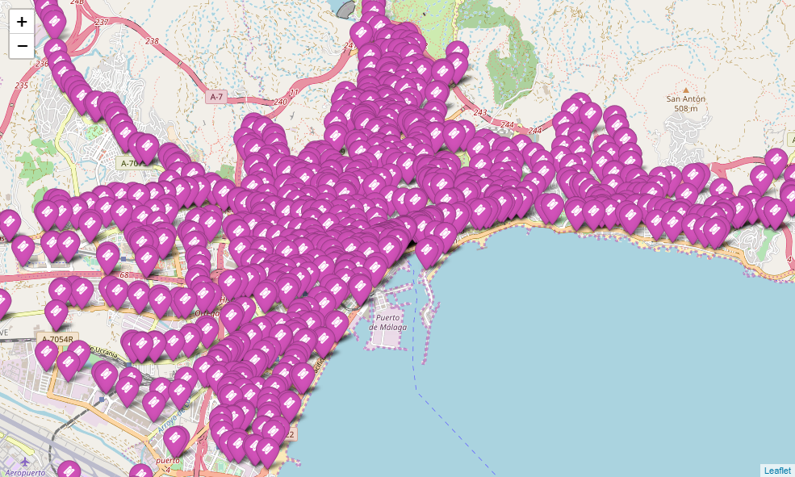
Visualización de todas las paradas de autobús en Málaga
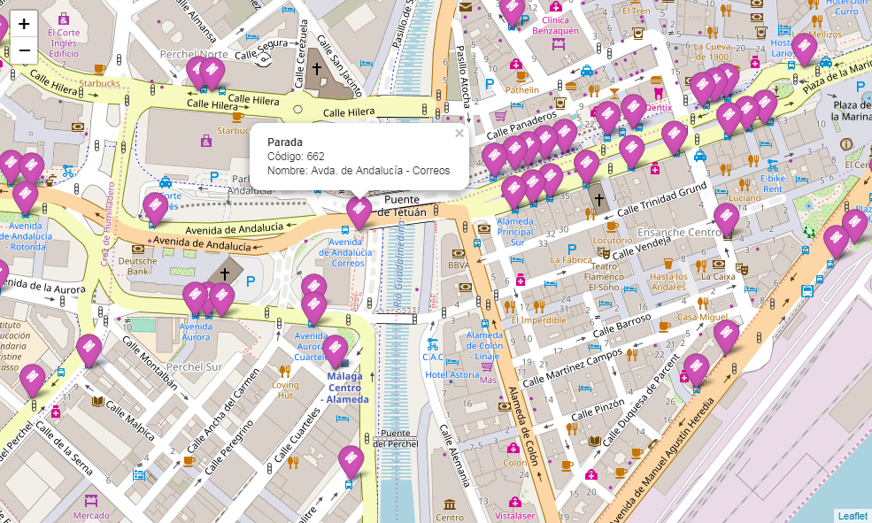
Visualización de las paradas de autobús en el centro de Málaga
Notebook 2. Segmentación de datos
Realización de un proceso no supervisado de segmentación usando el algoritmo k-medias el el conjunto de datos que almacena los retrasos de los autobuses.
Se busca detectar en qué momento se considera que un autobús está en estado:
- Adelantado
- En hora
- Retrasado
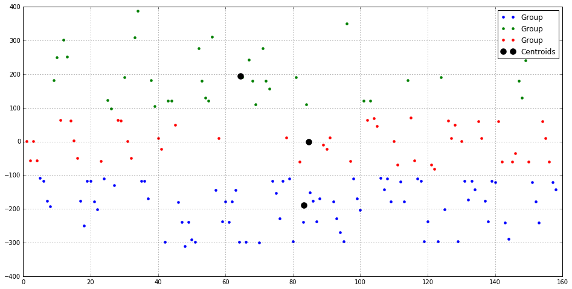
Segmentación de datos para detectar cuándo los autobuses llevan o no retraso
Notebook 3. Estimación de retrasos
En este notebook se utilizan los datos almacenados para mostrar todos los autobuses de una línea, estimar su estado y mostrar la información referente a dicha estimación.
Se debe configurar con parámetros como la velocidad media, o el umbral de retraso.
Este cuaderno puede ser ejecutado junto a los procesos Python de descarga y Spark de tratamiento de datos para procesar la información en tiempo real
Función de estimación de retrasos
Dado un registro de autobús ofrecido por la EMT:
| 1. | Se usa la última parada visitada por el autobús para calcular a cuál se está dirigiendo |
| 2. | Se comprueba el horario de la línea para obtener a qué hora debería llegar a dicha parada |
| 3. | se calcula la distancia en línea recta entre la posición del autobús y la parada destino |
| 4. | Se calcula el tiempo necesario para alcanzar dicha parada usando la velocidad media |
| 5. | Se suman, si fuese necesario, los extras por estar cerca de un semáforo o un corte de tráfico |
| 6. | Se calcula la hora de llegada estimada y se compara con la hora programada |
La diferencia en segundos entre la hora programa y estimada es la salida de esta función.
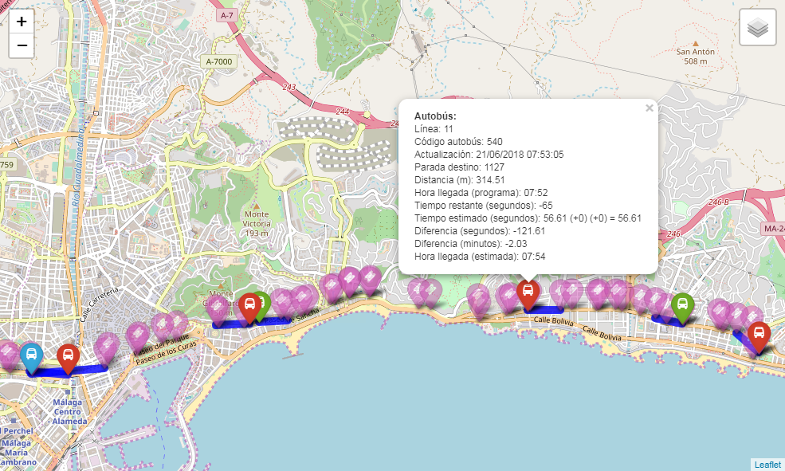
Salida del proceso de estimación de retraso de los autobuses
Notebook 4. Visualización y predicción - EMT Málaga
Notebook creado para estudiar los datos de los históricos de los retrasos de los autobuses de la EMT.
Se muestran los datos en gráficas para visualizarlos y ver los distintos detalles. Se entrena un modelo de regresión lineal para ver su comportamiento.
Se trata a los datos como una serie temporal y se entrena un modelo SARIMAX para realizar predicciones.
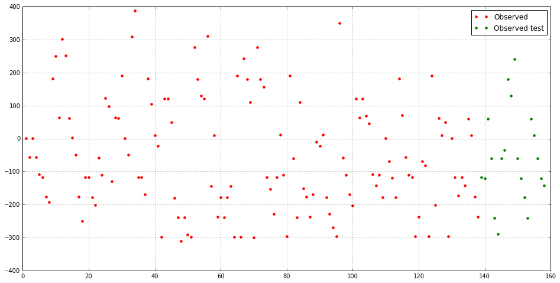
Visualización de los datos de retraso de los autobuses
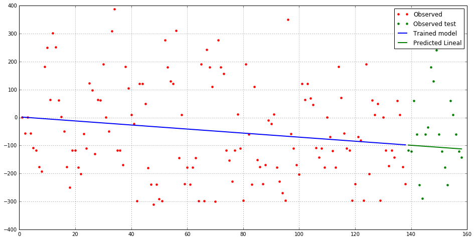
Resultados de la predicción usando el modelo lineal entrenado
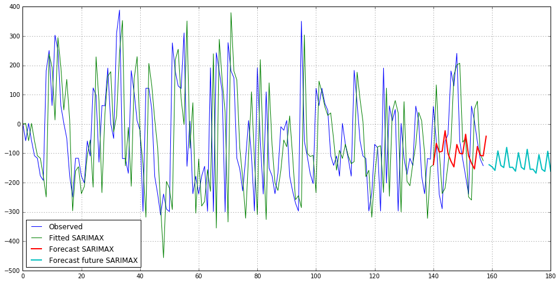
Resultados de la predicción usando el modelo SARIMAX entrenado
Notebook 5. Visualización y predicción - M30 Madrid
Notebook similar al anterior para estudiar el histórico de datos procedentes de un sensor situado en la M30 en Madrid. La medida corresponde a la tomada todos los días a las 8:00 horas desde 2013 a agosto de 2018.
Se analiza con más detalle los datos y se realizan comparaciones entre diferentes periodos de tiempo.
Se calcula por fuerza bruta los mejores índices para entrenar un modelo SARIMAX y se realizan predicciones usando las medidas de todos los lunes disponibles.
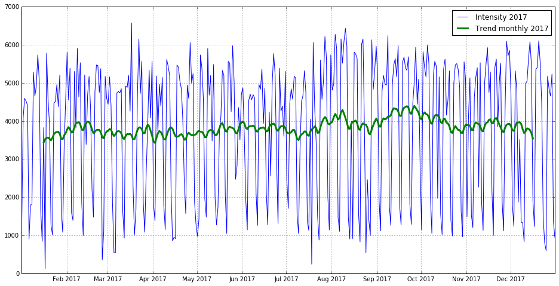
Datos del año 2017
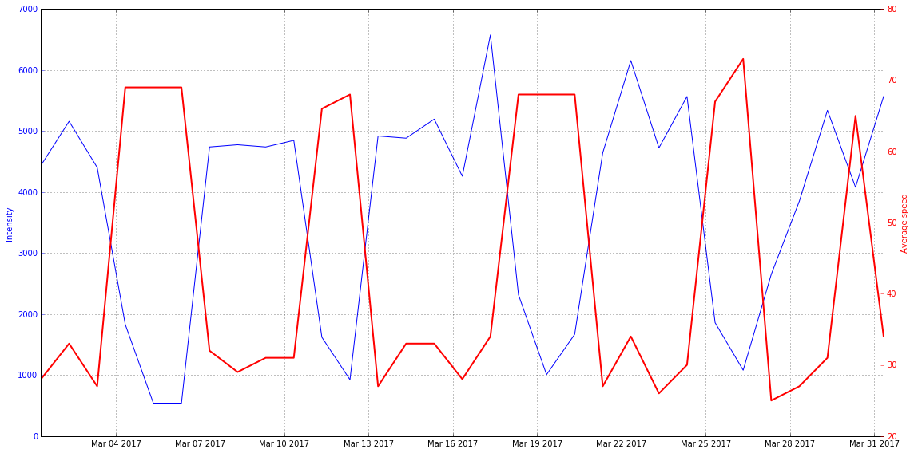
Comparación entre cantidad de tráfico y velocidad media
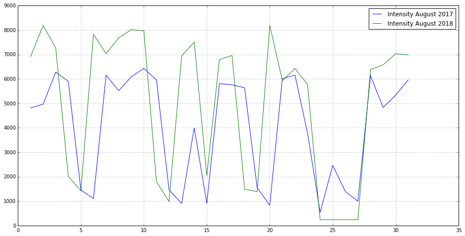
Comparación del mes de agosto durante 2017 y 2018
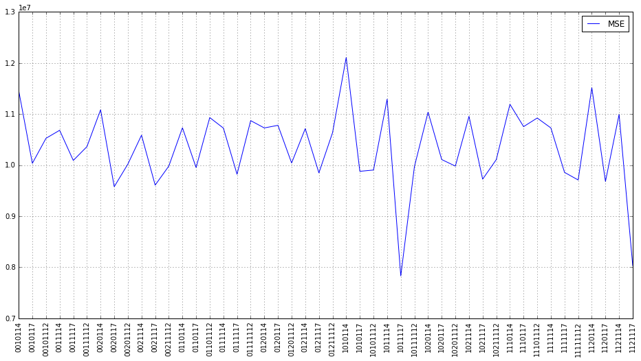
Resultados del análisis por fuerza bruta para los índices del modelo SARIMAX
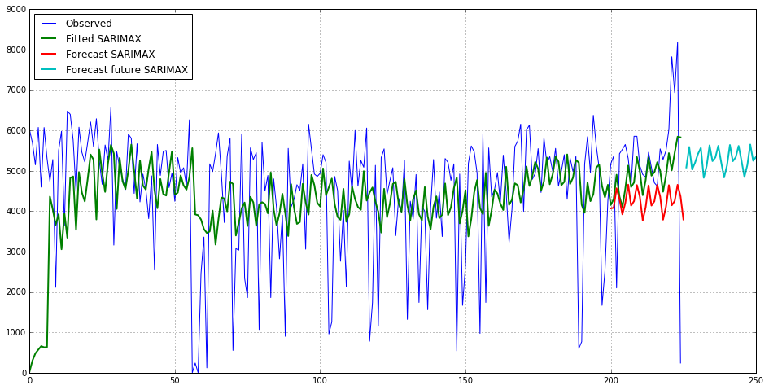
Resultados de la predicción usando el modelo SARIMAX entrenado
Notebook 6. Visualización y corrección – Parkings Málaga
En este notebook se intenta mejorar la calidad de los datos descargados, debido a que existe una oscilación extraña procedente del origen de los mismos.
No es posible detectar qué datos son correctos y cuáles no durante la descarga, por lo que no pueden descartarse de forma automática.
Se utilizan diversas técnicas de suavizado sobre los datos. Se concluye que el mejor resultado es ofrecido por la mediana.
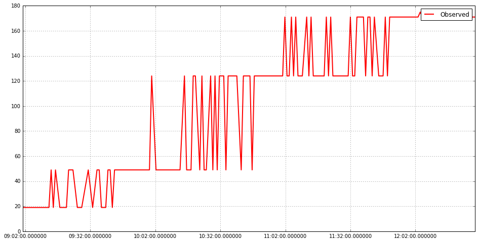
Segmento original de los datos
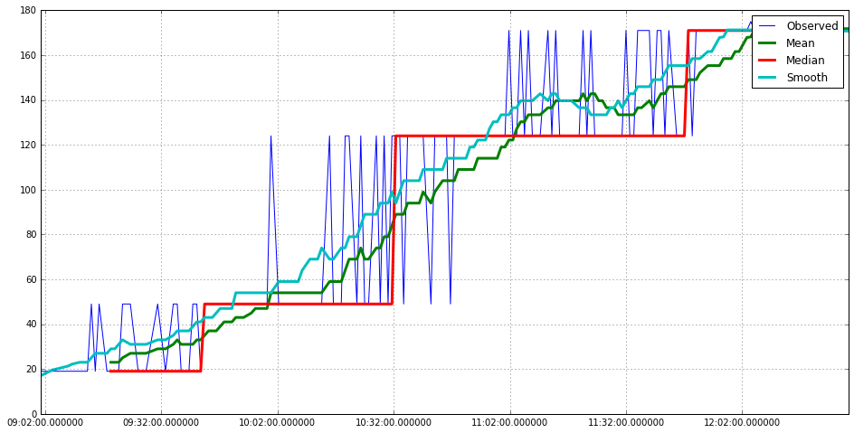
Comparación de los diferentes métodos de suavizado usados
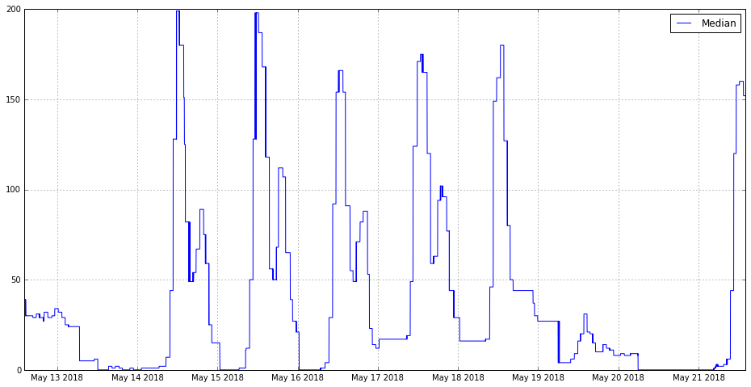
Resultado final de los datos tras aplicar el método de suavizado elegido
Conclusiones generales
- Existen muchos conjuntos de datos abiertos disponibles, pero cada uno tiene su propio formato y requieren ciertas transformaciones para ser útiles
- Son necesarios grandes conjuntos de datos y de gran calidad para poder realizar predicciones útiles
- Las tareas y procesos llevados a cabo durante este trabajo podrían servir como base para estudios posteriores
- Se ha obtenido experiencia en el uso de las tecnologías utilizadas y el tratamiento de grandes cantidades de datos
Muchas gracias por su atención
Escuela Técnica Superior de Ingeniería Informática
Máster en Ingeniería Informática
Máster en Ingeniería Informática
Análisis y explotación de datos abiertos municipales de transporte con tecnologías Big Data
Carlos Jesús Peláez Rivas
|
Tutorizado por: Antonio Jesús Nebro Urbaneja José Manuel García Nieto Departamento: Lenguajes y Ciencias de la Computación |
Universidad de Málaga Octubre de 2018 |